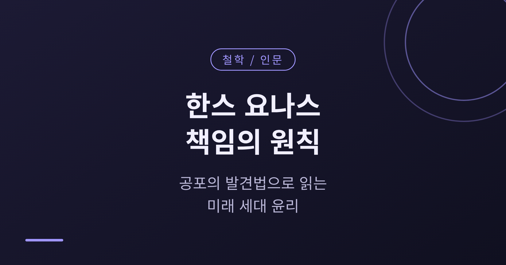
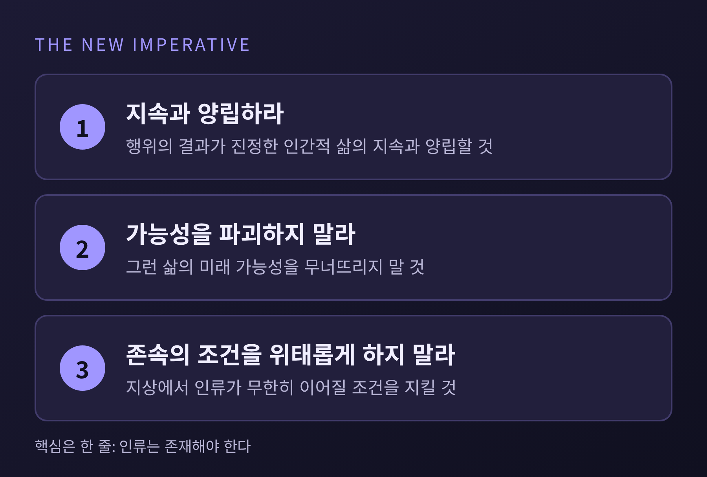
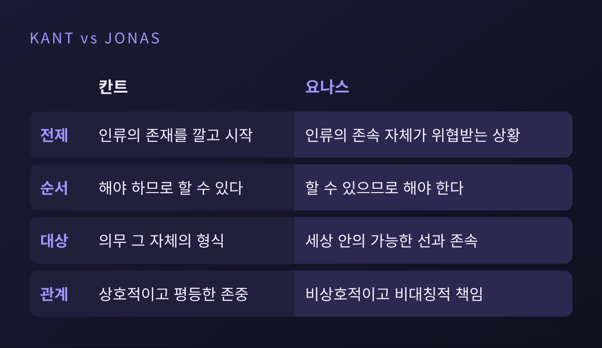
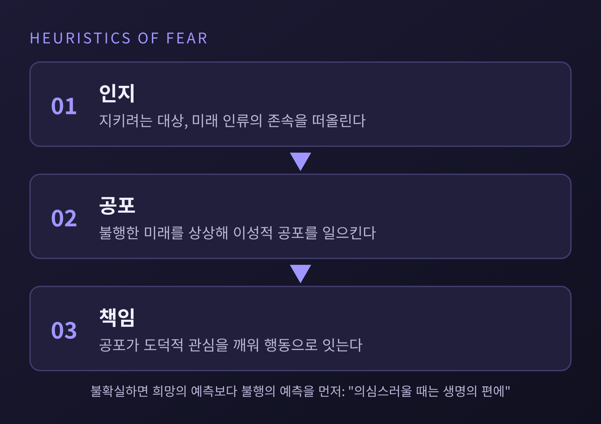
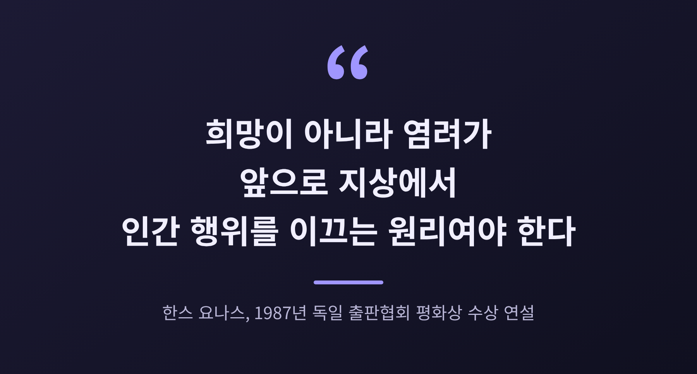
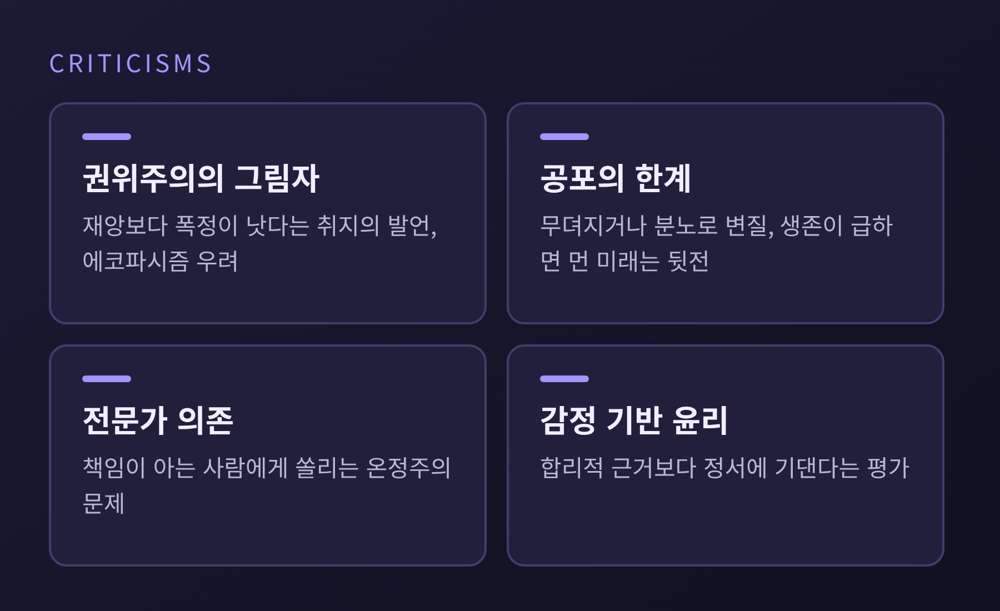

한스 요나스 책임의 원칙, 공포의 발견법으로 읽는 미래 세대 윤리

오늘은 한스 요나스의 『책임의 원칙』을 정리해 보려 합니다. 이 책의 요지는 기술이 인류의 존속을 위협할 만큼 커진 시대에는 윤리도 달라져야 하며, 그 출발점은 희망이 아니라 공포라는 것입니다. 칸트의 정언명령과 무엇이 다른지, 어디까지 설득력이 있고 어디서 비판받는지까지 차례로 살펴보겠습니다.
■ 책의 배경, 1979년에 나온 기술 문명 윤리서
한스 요나스는 1903년에 태어나 1993년에 세상을 떠난 독일 출신 철학자입니다. 후설과 하이데거, 불트만 밑에서 공부했고, 처음에는 영지주의 연구로 이름을 알렸습니다. 영국과 팔레스타인으로 건너가 예루살렘에서 가르쳤고, 2차 대전 때는 영국군으로 참전했습니다. 전쟁이 끝난 뒤에는 캐나다와 미국에서 일했습니다.
『책임의 원칙』은 이 오랜 이력 끝에 1979년 독일어로 나온 책입니다. 영어판은 1984년에 시카고대학 출판부에서 『The Imperative of Responsibility』라는 제목으로 나왔습니다. 1987년에는 독일 출판협회 평화상을 받았습니다.
흥미로운 일화가 하나 있습니다. 요나스 자신도 처음에는 히로시마와 나가사키를 미래 에너지 가능성의 신호로 읽었다고 합니다. 견해를 고친 것은 1960년대에 들어서였습니다. 기술을 바라보는 시선이 한 철학자 안에서도 이렇게 바뀌었다는 사실이 책의 출발점을 짐작하게 합니다.
■ 새로운 명령, 인간적 삶의 지속과 양립하라
요나스가 내놓은 핵심 문장은 이렇습니다. "네 행위의 결과가 지상에서 진정한 인간적 삶의 지속과 양립할 수 있도록 행위하라." 부정형으로 바꾸면 인류가 지상에서 무한히 존속할 조건을 위태롭게 하지 말라는 뜻이 됩니다. 가장 짧게 줄이면 "인류는 존재해야 한다"입니다.
칸트의 형식을 빌렸으나 내용은 다른 명령입니다. 한 논문이 인용한 또 다른 표현은 미래 인간의 불가침성을 지금의 선택에 함께 포함하라는 것입니다. 지금 내리는 결정의 영향권에 아직 태어나지 않은 사람들이 들어온다는 말입니다.

여기서 눈여겨볼 대목은 책임의 대상입니다. 요나스는 책임이 상호성이나 권리 관념과 무관하게 세워져야 한다고 보았습니다. 책임을 지는 상대는 미래의 개별 인간이 아니라 "인간이라는 이념"이며, 첫째 대상은 책임질 수 있는 존재가 세상에 계속 있게 하는 일입니다. 아직 존재하지 않는 이들은 우리에게 아무것도 돌려줄 수 없습니다. 그래서 이 책임은 비대칭적입니다.
요나스는 이 책임의 원형을 부모에게서 찾았습니다. 부모의 자식에 대한 책임을 "모든 책임의 시간을 초월한 원형"이라 불렀고, 전적이고 지속적인 것으로 설명했습니다. 갓난아이가 보여 주는 취약함이 곧 돌봄의 요구가 된다는 논리입니다.
■ 칸트의 정언명령과 어디가 다른가
칸트의 명령은 지금 존재하는 이성적 인간들이 서로를 어떻게 대해야 하는지를 묻습니다. 인류가 계속 존재하리라는 것은 말하자면 깔려 있는 전제입니다. 요나스는 바로 그 전제가 흔들리는 시대에 윤리를 다시 써야 한다고 보았습니다. 한 연구자의 지적대로 칸트의 정식에는 인류의 지속을 요구하는 조항이 없습니다.
두 번째 차이는 순서입니다. 칸트에게는 "해야 하므로 할 수 있다"가 있다면, 요나스는 이를 뒤집어 "할 수 있으므로 해야 한다"고 말합니다. 힘이 커진 만큼 책임이 따라붙는다는 뜻입니다.
세 번째는 무엇을 대상으로 삼느냐입니다. 요나스는 칸트의 형식주의에 선을 긋고, 도덕 행위의 대상은 의무 자체가 아니라 세상 안의 가능한 선이라고 보았습니다. 상호적이고 평등한 존중을 기본으로 하는 칸트의 틀은 태어나지 않은 이들에 대한 일방적 책임과도 잘 맞지 않습니다.

■ 희망의 발견법 대신 공포의 발견법
요나스의 가장 도발적인 주장은 공포를 윤리의 도구로 삼자는 것입니다. 우리는 무엇이 걸려 있는지를 그것이 위협받을 때에야 비로소 알아본다는 관찰에서 출발합니다. 악을 아는 일이 선을 아는 일보다 훨씬 쉽다는 말도 같은 맥락입니다.
과정은 세 걸음으로 정리됩니다. 지키려는 대상, 곧 미래 인류의 존속을 먼저 떠올립니다. 그것이 무너진 불행한 미래를 상상으로 불러옵니다. 그 상상이 일으킨 공포가 도덕적 관심을 깨워 책임 있는 행동으로 이어집니다.

모든 공포를 말하는 것은 아닙니다. 연구자들은 요나스의 공포를 병리적 공포, 일상의 소심한 공포, 이성적 공포로 나눈 뒤 이성적 공포만을 가리킨다고 설명합니다. 마비를 부르는 공포가 아니라 예방 행동을 부르는 공포입니다.
판단이 불확실할 때의 규칙도 분명합니다. 희망 섞인 예측보다 불행의 예측에 무게를 두라는 것입니다. 1987년 평화상 수상 연설에서 요나스는 이를 "의심스러울 때는 생명의 편에"라는 새로운 안전우선론으로 불렀습니다. 같은 연설의 한 대목이 그의 입장을 가장 짧게 보여 줍니다.

여기에는 블로흐의 『희망의 원리』에 대한 응답이 깔려 있습니다. 요나스는 블로흐를 자연을 정복의 대상으로 보고, 먼 미래를 앞세워 현재를 깎아내리는 낙관주의자로 읽었습니다. 다만 블로흐의 희망에도 실패 가능성을 헤아리는 책임의 감각이 들어 있다는 반론이 있어, 두 사람의 대립은 지금도 정리가 끝나지 않았습니다.
■ 미래 세대에 대한 책임, 그리고 비판
미래 세대는 스스로 말할 수 없습니다. 그래서 요나스는 현세대가 대신 존속을 책임져야 한다고 보았습니다. 같은 연설의 문장이 이를 압축합니다. "우리는 사회적, 경제적 문제를 다가올 세대의 희생으로 풀 권리가 없다."
존속만이 목표도 아닙니다. 한 연구는 요나스가 단순한 생존을 넘어 진정한 인류를 이루어 갈 의무를 말했다고 풉니다. 그가 소박하게 바란 것은 세계가 계속 살 만한 곳으로 남는 것, 이른바 '계속된 거주 가능성'이었습니다.
그러나 비판도 만만치 않습니다. 정리하면 이렇습니다.

첫째, 권위주의의 그림자입니다. 요나스는 재앙에 견주면 그런 폭정이 늘 낫다는 취지로 말한 적이 있고, 이 대목은 에코파시즘에 가깝다는 경고를 받았습니다. 일부 해석자는 그의 후기 저작이 "생존의 전체주의"로 기울 수 있다고 우려합니다. 옹호하는 쪽은 자유주의적 반론이 현상 유지를 돕는 거짓 딜레마라고 맞섭니다.
둘째, 공포의 한계입니다. 공포는 시간이 지나면 무뎌지거나 분노와 원한으로 변질될 수 있습니다. 당장의 생존이 급한 사람은 먼 미래를 걱정할 여력이 없습니다. 이에 한 연구자는 공포에 연민을 더한 '공포-연민의 발견법'을 대안으로 내놓았습니다.
셋째, 판단의 주체 문제입니다. 책임이 정치인과 전문가 같은 '아는 사람'에게 쏠린다는 지적이 있습니다. 위협을 과장하고 있다는 반론, 정서에 기대는 윤리라는 평가도 따라붙습니다.
정리하면 이렇습니다. 『책임의 원칙』은 모든 쟁점에 해답을 주는 책이 아닙니다. 어떤 성장을 얼마나 제한할지처럼 현실의 선택 앞에서는 구체성이 부족하다는 평도 있습니다.
그럼에도 이 책이 남긴 질문은 무겁습니다. 우리의 힘이 우리 자신을 위협할 만큼 커졌다면, 우리는 아직 오지 않은 이들을 선택의 당사자로 세울 수 있는가 하는 질문입니다. 요나스는 평화상 연설에서 "우리가 지금 둘러싸인 위험은 우리 자신"이라고 말했습니다.
"희망보다 먼저 염려를." 책의 메시지는 이 한 줄이라고 생각합니다.
공포를 윤리의 출발점으로 삼는 일이 불편하셨다면, 그 불편함이야말로 요나스가 노린 첫걸음이었을지도 모릅니다.